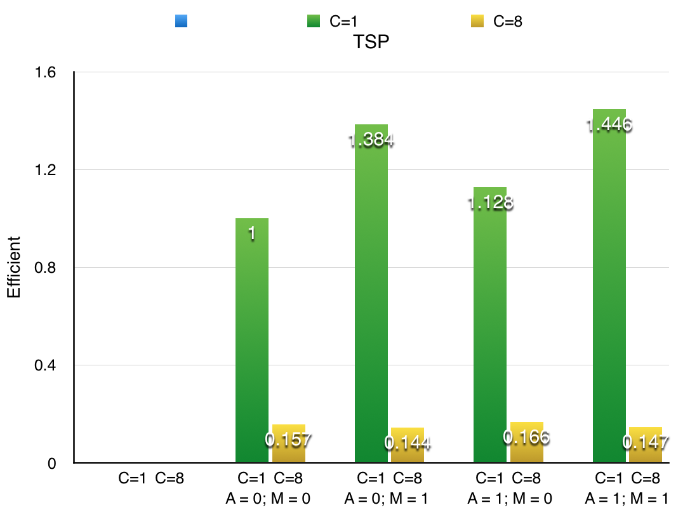
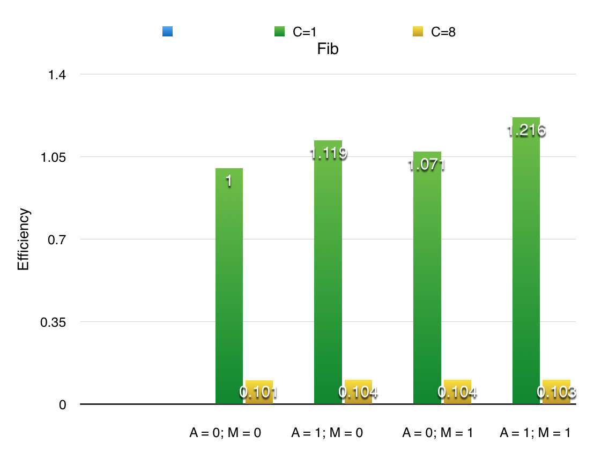

The following is the graph for efficiency.
 For the C=1 case, those two techniques seem to have a pretty good boost on the performance, yet for the C=8 case, it doesn't do much help
The main design issues I have is about the Computer. Previously each computer has only one task and after it computes it, it returns to the space. That should be changed in order to improve the efficiency of the computers.
Therefore, I change the design that when the computer executes a task, it doesn't really run the task but rather put the task on a queue inside the computer. When the computer is connected to the space, there are several threads running on the computer, each of which tries to grab a task from the queue of the computer and execute it. As such, task prefetching and multi-core can be implements and thus the efficiency can be improved. I can control how many tasks are stored on the computer and how many threads I can create. When the number of tasks in the queue go beyong the limit, the computer will just stop putting tasks in the queue
Moreover, to also improve performance, I implement space execute tasks. Basically I assume that the composing tasks take not much effort compared with other tasks, and thus they can be computed on the space. Whenever a waiting task is ready, which has to be a composing task, a separate thread on the computer will take that and execute it, which will save a lot of rmi calls.
In terms of fault tolerance, a list of retrieved tasks is kept by the computer proxy. Whenever the task is finished, the space will be notified that the task is done. When a computer is down, the proxy will find which of the tasks it has doesn't have a result yet, and it will put that tasks back to the space.